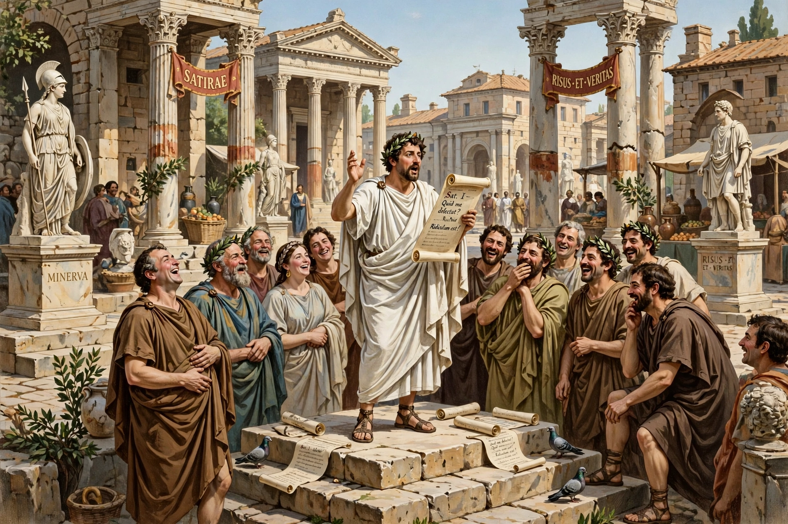

| Period | 2nd century BC – 2nd century AD |
|---|---|
| Language | Latin |
| Major authors | Lucilius, Horace, Persius, Juvenal |
Roman satire is a literary genre of Latin literature characterised by humour, irony, and social criticism, written in verse (later also prose miscellanies). Romans claimed satire — satura, a medley — as entirely their own: satura quidem tota nostra est (Quintilian).
Gaius Lucilius (2nd century BC) established verse satire in hexameters, attacking contemporaries freely. Horace made satire conversational and self-deprecating in his Sermones, advocating moderation. Persius wrote dense Stoic satires; Juvenal, under the Empire, turned to furious denunciation — difficile est saturam non scribere — coining phrases like "bread and circuses" and "Who will watch the watchmen?"
A prose-and-verse variety, after Menippus, was used by Varro, Seneca (Apocolocyntosis), and Petronius (Satyricon). Roman satire profoundly influenced later European satire from Dryden and Pope to modern political humour. See Roman Forum.